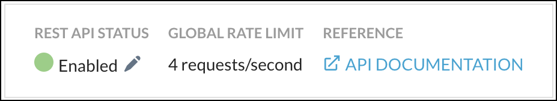
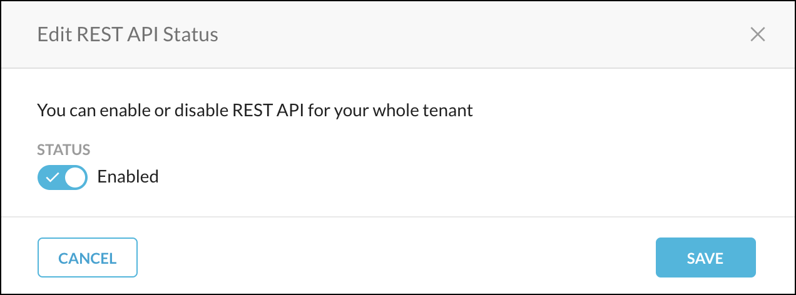
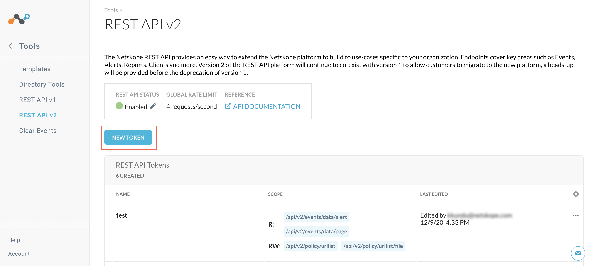
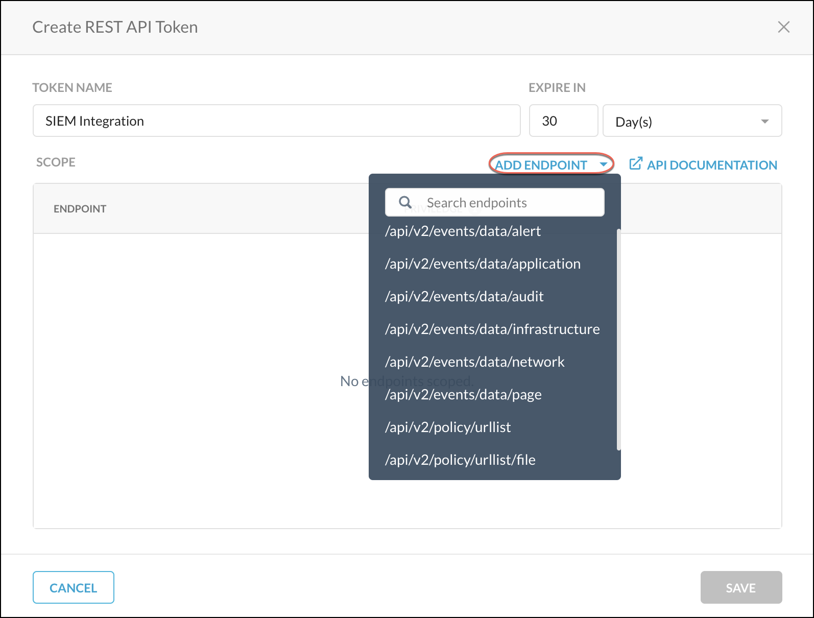
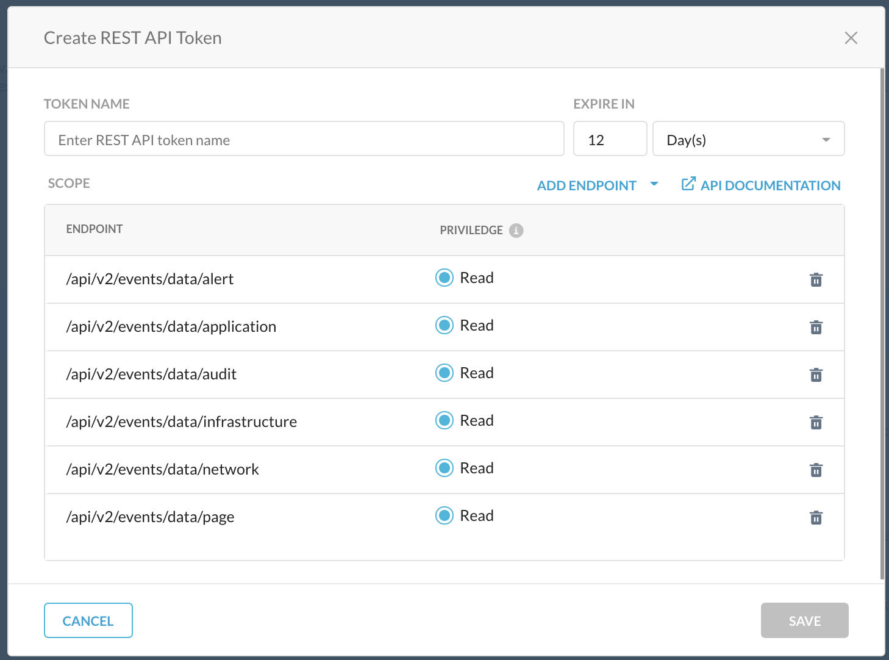
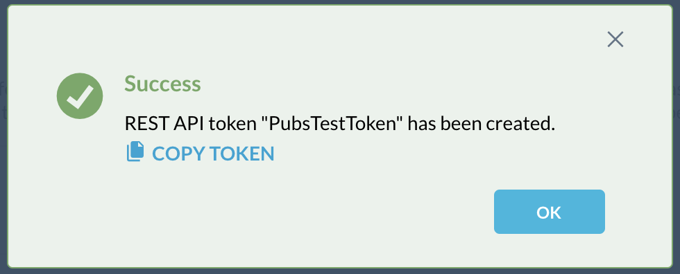
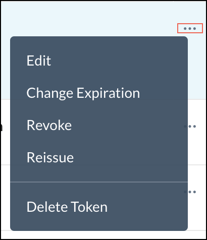
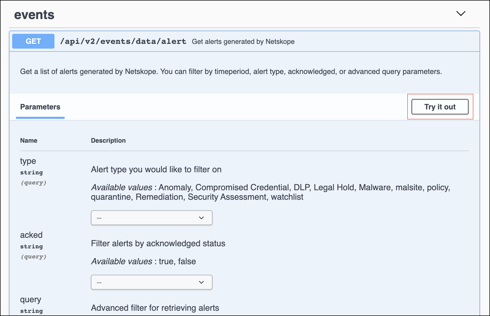

REST API v2 Overview
This topic explains how to use the new REST API v2 pages in the Netskope UI.
Netskope REST APIs use an auth token to make authorized calls to the API. Netskope REST APIs provide access to resources via URI paths. The token must be used in every REST API call for the tenant. The token can be created for use with specified APIs in the Netskope UI by going to Settings > Tools > Rest API v2.
At the top of the page there are three items:
|  |
REST API Status: Shows the status and allows you to enable or disable all of the REST API tokens for this tenant. Click the pencil icon to open this dialog when you want to enable or disable all tokens.
 Global Rate Limit: Shows the request per second.
Reference: This link opens the Swagger API documentation. For use information, go to the Swagger API Documentation section below.
To create a new token:
On the REST API v2 page, click New Token.
 Enter a token name, the token expiration time, and then click Add Endpoint to select the API endpoints to use with the token.
 Specify the privileges for each of the endpoints added. Read privileges include GET, and Read+Write privileges include GET, PUT, POST, PATCH, and DELETE. Endpoint privileges vary. Some endpoints, like alert and audit (and others) only have the Read privilege; whereas, the URL list/file endpoint only has Read+Write privileges.
When finished, click Save.
A confirmation box opens showing whether the token creation was a success. If so, click Copy Token to save it for later use in your API requests. Add the token to the Netskope-Api-Token header.
Important
The only opportunity to copy the token is immediately after you create it. The token is required in your API requests.
 When finished, click OK.
After being created, tokens can be managed by clicking the adjacent  icon for the token and selecting one of these options:
icon for the token and selecting one of these options:
|  |
For example, to reset the token expiration time, Change Expiration. Specify the number of hours, days, weeks, or months to keep the token valid, and then click Save.
 |
For a standard token rotation over a given time period (like changing passwords every 90 days, for example), or in the event of a compromise/leak, you’ll want to revoke and reissue a new token.
Swagger API Documentation
To see API parameters information, click the API Documentation link on the REST API v2 page or in the Create REST API Token dialog box, which opens the Swagger UI. Available endpoints, methods, and parameters are shown here.
To view endpoint payload information in Swagger:
Click on one of the endpoints, like
alert, to see the parameters available. Parameter descriptions provide information about the available values, format requirements, and factors related to use with other parameters. Some parameters provide dropdown lists for supported options, other parameters use text field entries.
Copy the endpoint Request URL and parameters to use in your API calls. Make sure the token is added to the Netskope-Api-Token header before sending requests; otherwise, you will get an error.